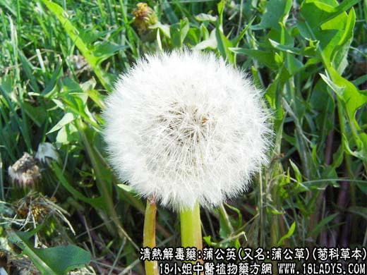

【中药概述】
蒲公英，又名:蒲公草、雾灵蒲公英、碱地蒲公英、耩耨草、白鼓丁、奶汁草、辽东蒲公英、藏蒲公英、白花蒲公英、白缘蒲公英、卜地蜈蚣、凸尖蒲公英、东北蒲公英、仆公英、仆公罂、古古丁、地丁、耳瘢草、金簪草、狗乳草、黄花苗，为菊科草本，属清热解毒药。
【蒲公英_蒲公英的功效与作用_蒲公英的药用价值】
别名：桃金英。
植物名：洋蒲公英。
生长环境：本品为多年生草本，是草地或空旷地野生植物。
分布：野生于温带地区，但广东省多为栽培。
入药部分：全株。
采集期：全年，冬季咯少。
自采地点：家种。
性味：性微凉、味淡。
功能：清热、去痰火、解毒、利水。
主治、用量和用法：1、痰火核：干用5钱至1两，清水煎服；2、乳痈：生用适量，捣烂加酒，炖40分钟服，渣外敷患处；3、痈疮：生用加片糖捣烂，外敷患处；4、血淋，配伍用。
验方：（治热毒疮方）蒲公英5钱、青天葵2钱、地丁3钱、艮花5钱、甘菊3钱、清水三碗，煎成一碗服。
（方解）热毒生疮痛莫惊，青天葵与蒲公英，地丁艮花甘菊合，血凉热解毒能清。
参考资料：蒲公英用冷水煲不苦，水滚后下则味苦。本地以苦地胆为“土公英”与“蒲公英”不同。